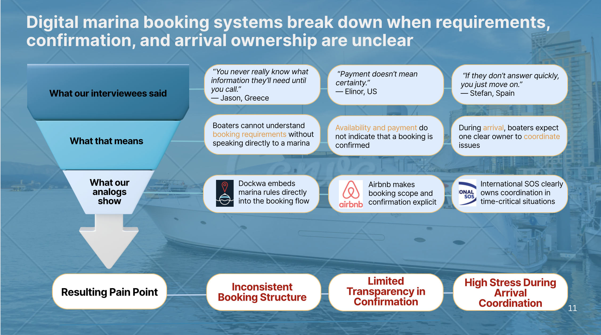
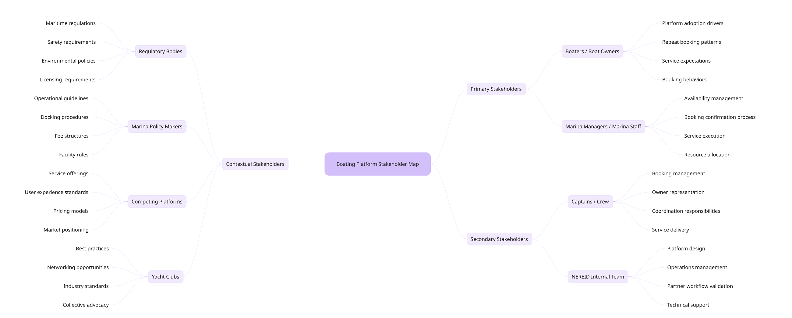
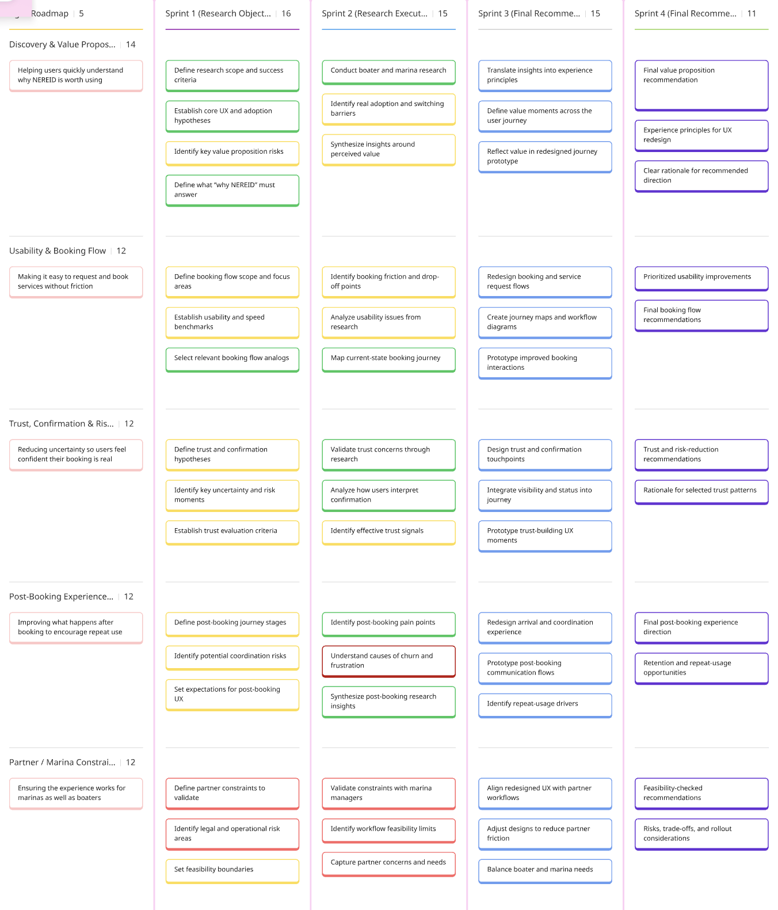
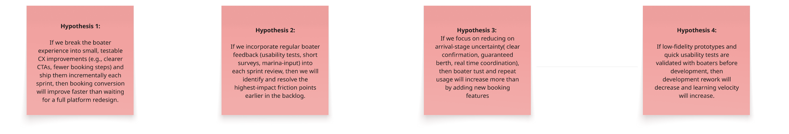
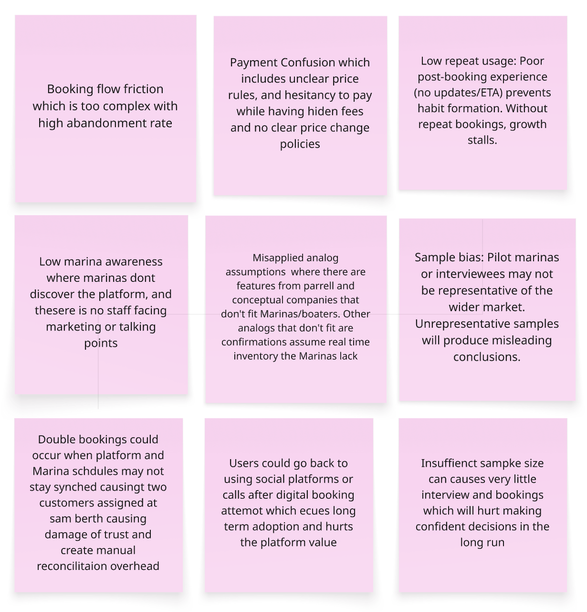
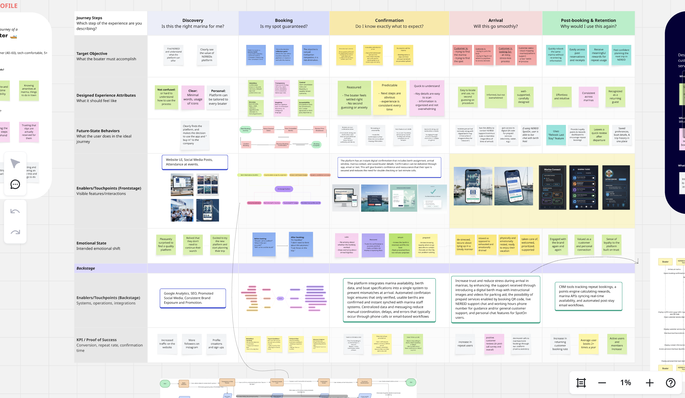

NEREID
A marina booking platform redesigned around trust, confirmation, and arrival, built from interviews across Greece, the US, and Spain.
Visit NEREID ↗"You never really know what information they'll need until you call." Jason, Greece
"Her creative thinking and iterative approach made the overall assignment easier to complete and with real quality." Dhruv Jain, teammate
The challenge
Digital marina booking systems break down when requirements, confirmation, and arrival ownership are unclear. Boaters kept calling marinas directly because the booking flow didn't tell them what they needed to know, and even after booking, confirmation didn't feel like certainty.
The solution
Three research-backed interventions mapped directly to the trust breakdowns we found: a restructured homepage, a verified booking flow, and Arrival Mode, a new feature addressing the post-booking anxiety our interviews surfaced.
What we found
Three structural trust breakdowns emerged from user interviews and competitive analog research across Greece, the US, and Spain: an inconsistent booking structure, limited transparency in confirmation, and high stress during arrival coordination.
Competitive analog research shaped the direction: Dockwa embeds marina rules directly into the booking flow, Airbnb makes booking scope and confirmation explicit, and International SOS clearly owns coordination in time-critical situations. NEREID needed to borrow from all three.

Synthesis of interview findings into three structural trust breakdowns.
Who we designed for
Key goals
- Clear, streamlined information
- Accurate, real-time availability
- Knowing marina amenities & things to do
Biggest struggles
- Using too many apps/channels
- Not knowing arrival steps beforehand
- Trusting the slip is actually reserved
Core tasks
- Finding a slip that fits their boat
- Navigating the marina
- Planning the full trip and things to do
The journey, stage by stage
What we designed
Homepage redesign
Restructured the information architecture to clarify the value proposition upfront and reduce confusion at the entry point. Introduced a boater-listed slip feature, giving owners a second pathway into the marketplace.
Verified booking flow
Instant digital confirmation with berth assignment, arrival window, and marina contact synced in real time, so a confirmed booking actually feels confirmed instead of something boaters need to double-check by phone.
Arrival Mode
Gives boaters a single place to access their slip location, QR check-in, marina contact, and real-time support before and during docking, replacing the scattered calls and uncertainty our research surfaced as the biggest source of arrival-stage anxiety.
How the work got done
Research, prioritization, and risk tracking behind the design decisions above.





Outcome
Paris Zoiros has implemented the redesigned homepage, with the verified booking flow and Arrival Mode currently in development as the team builds out the full app. NEREID won Best Client Work out of 20 teams, with the client and teammates citing the trust-breakdown research as the reason the design direction felt inevitable rather than arbitrary.